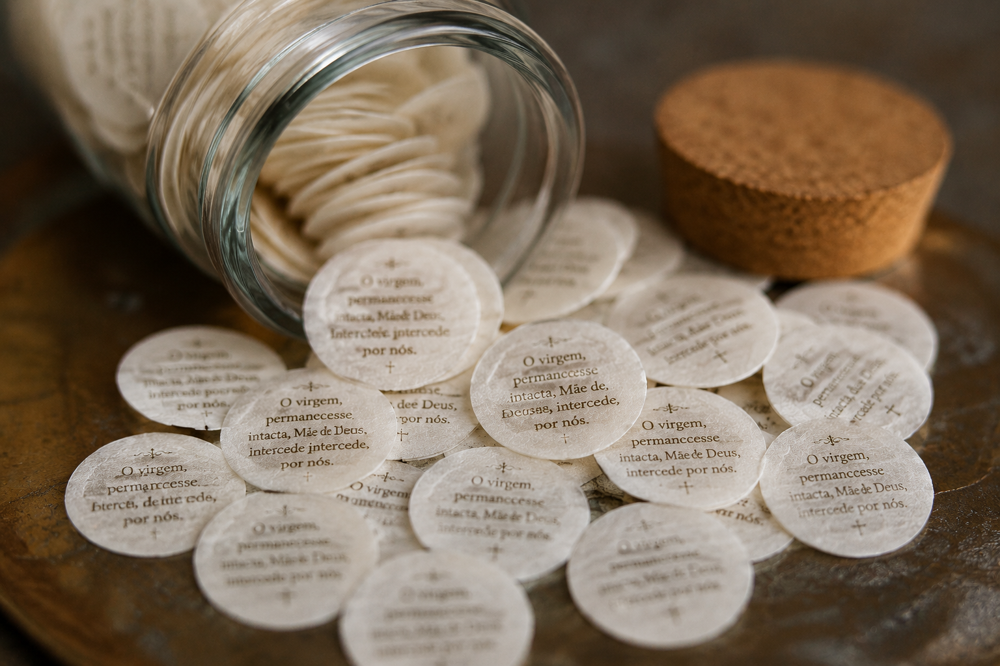

01
Infância e Vocação
Antônio de Sant'Ana Galvão nasceu em 1739, na então Vila de Guaratinguetá, em São Paulo. Desde muito cedo demonstrou grande devoção à Santíssima Virgem Maria e profundo amor pela oração.
"Depois de Deus, recorrei sempre à Santíssima Virgem Maria."
Descubra a vida, os milagres e a espiritualidade de Frei Galvão, o primeiro santo nascido no Brasil. Conheça sua história, reze sua oração e acompanhe a novena completa em um portal moderno, inspirador e preparado para fortalecer sua fé.

A vida de um homem que entregou sua existência a Deus, servindo ao próximo com humildade, oração e amor.
Antônio de Sant'Ana Galvão nasceu em 1739, na então Vila de Guaratinguetá, em São Paulo. Desde muito cedo demonstrou grande devoção à Santíssima Virgem Maria e profundo amor pela oração.
Ainda jovem ingressou na Ordem Franciscana, onde recebeu sólida formação espiritual. Sua vida tornou-se exemplo de humildade, pobreza e total confiança na Providência Divina.
Frei Galvão dedicou sua vida aos enfermos, aos pobres e aos necessitados. Seu testemunho de caridade conquistou o coração do povo brasileiro.
A pedido de Deus, Frei Galvão escreveu pequenos pergaminhos com uma oração mariana. Esses papéis passaram a ser conhecidos como "Pílulas de Frei Galvão", tornando-se um dos maiores símbolos de sua intercessão.

Reconhecido pelos inúmeros testemunhos de graças e milagres, Frei Galvão foi canonizado em 2007, tornando-se o primeiro santo nascido no Brasil.
Reze com confiança
Ó glorioso Santo Antônio de Sant’Ana Galvão,
servo fiel de Deus e exemplo de humildade,
caridade e amor ao próximo.
Vós que dedicastes toda a vossa vida
ao serviço dos pobres, dos enfermos
e daqueles que buscavam conforto espiritual,
intercedei por nós diante do Senhor.
Alcançai-nos a graça de viver
uma fé sincera, perseverante e cheia de esperança.
Que, por vossa poderosa intercessão,
possamos receber as graças de que necessitamos,
sempre conforme a vontade de Deus.
Ajudai-nos a seguir os caminhos do Evangelho,
praticando o amor, a misericórdia
e a confiança na Providência Divina.
Frei Galvão,
rogai por nós.
Amém.
Um dos maiores sinais de fé

As Pílulas de Frei Galvão são pequenos papéis com uma oração mariana, escritos pelo santo franciscano. Ao serem ingeridos com fé, tornaram-se sinal de inúmeras graças e curas.
Até hoje, milhares de devotos relatam bênçãos alcançadas por meio desta devoção.
9 dias de oração
Entregamos nossa vida a Deus, confiando na intercessão de Frei Galvão.
Oração: Senhor, aumenta nossa fé e confiança em Ti.
Frei Galvão viveu na simplicidade e na humildade profunda.
Oração: Ensina-nos a ser humildes como Cristo.
Sua vida foi dedicada aos pobres e necessitados.
Oração: Dai-nos um coração caridoso e generoso.
A oração era o centro da vida de Frei Galvão.
Oração: Ensina-nos a rezar com o coração.
Grande devoto de Nossa Senhora, Frei Galvão sempre confiou em Maria.
Oração: Maria, intercede por nós junto a Jesus.
As Pílulas de Frei Galvão são sinal de fé e milagres.
Oração: Senhor, cura nossas enfermidades do corpo e da alma.
Permanecer fiel a Deus mesmo nas dificuldades.
Oração: Dá-nos força para perseverar.
Frei Galvão é exemplo de santidade para o povo brasileiro.
Oração: Ajuda-nos a buscar a santidade no dia a dia.
Encerramos a novena com coração agradecido.
Oração: Obrigado Senhor por todas as graças recebidas.
Frei Galvão, primeiro santo brasileiro, continua vivo na devoção do povo e nas graças recebidas diariamente.